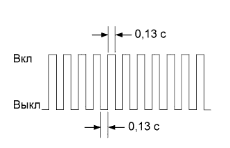

СИСТЕМА SFI > ПРОВЕДЕНИЕ АКТИВНОЙ ДИАГНОСТИКИ |
| ПОРЯДОК ВЫПОЛНЕНИЯ ПРОВЕРКИ В РЕЖИМЕ АКТИВНОЙ ДИАГНОСТИКИ (с помощью портативного диагностического прибора) |
Выполните проверку и убедитесь, что выполняются следующие условия.
Напряжение аккумуляторной батареи составляет не менее 11 В.
Дроссельная заслонка полностью закрыта.
Трансмиссия находится в нейтральном положении.
Система кондиционирования выключена.
Выключите зажигание.
Подсоедините портативный диагностический прибор к DLC3.
Установите замок зажигания в положение ON (ВКЛ).
Включите портативный диагностический прибор.
Войдите в следующие меню: Powertrain / Engine and ECT / Utility / Check Mode.
Переключите ECM из нормального режима диагностики в режим активной диагностики.
|  |
Удостоверьтесь, что контрольная лампа неисправности (MIL) мигает, как показано на рисунке.
Запустите двигатель.
Убедитесь, что контрольная лампа MIL выключается.
Воспроизведите условия возникновения неисправности, описанные клиентом.
Проверьте коды DTC и данные фиксированного набора параметров с помощью портативного диагностического прибора.